Holistic Loader's sound healing room lets you play and tune a gong, crystal and Tibetan singing bowls, handpan, tongue drum, wind chimes, harp, sansula, monochord and pan flute — each adjustable to its own Hz frequency for relaxation, meditation or focus. Click or tap the instruments to play them, no app or sign-up required.
CLICK · CLICK & DRAG THE INSTRUMENTSTAP · DOUBLE TAP & SWEEP
Gong · tap or drag your finger
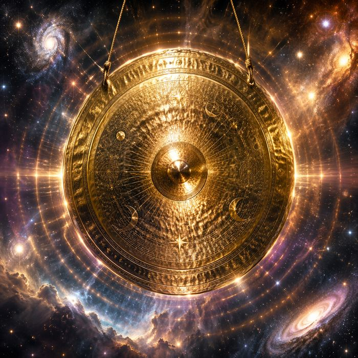
TUNE90 Hz
BPMevery 2 sec (30 bpm)
TIME30 sec
Crystal bowl · tap or circle it
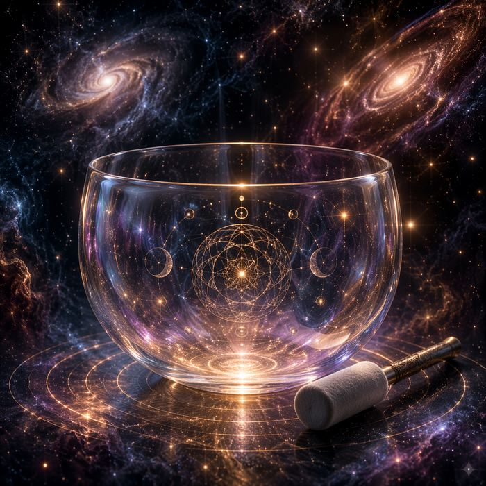
TUNE480 Hz
BPMevery 2 sec (30 bpm)
TIME30 sec
Handpan · tap the tone fields
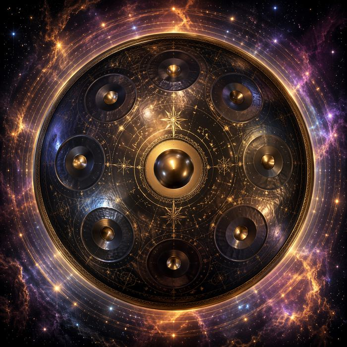
TUNE147 Hz
BPMevery 2 sec (30 bpm)
TIME30 sec
Tongue drum · tap the tongues
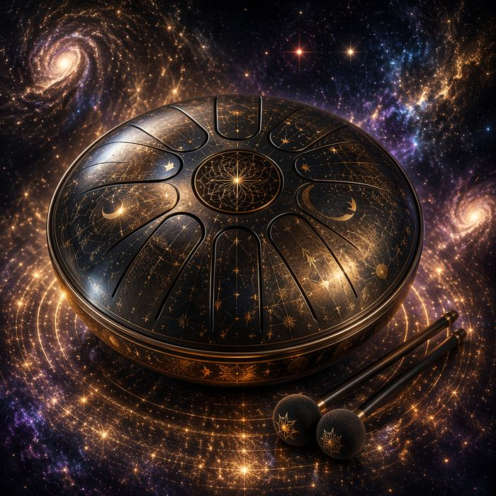
TUNE294 Hz
BPMevery 2 sec (30 bpm)
TIME30 sec
Wind chimes · tap the tubes, or the wind sail for a breeze
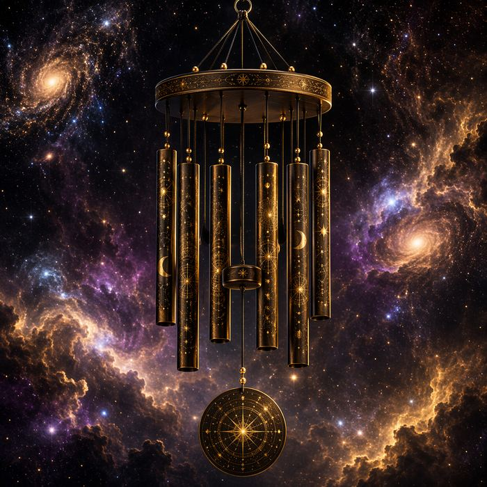
TUNE587 Hz
BPMevery 2 sec (30 bpm)
TIME30 sec
Triangle · tap for a shimmering ting
TUNE2900 Hz
BPMevery 2 sec (30 bpm)
TIME30 sec
Harp · pluck a string, or sweep for a glissando
TUNE147 Hz
BPMevery 2 sec (30 bpm)
TIME30 sec
Sansula · pluck the tines, sweep for a ripple
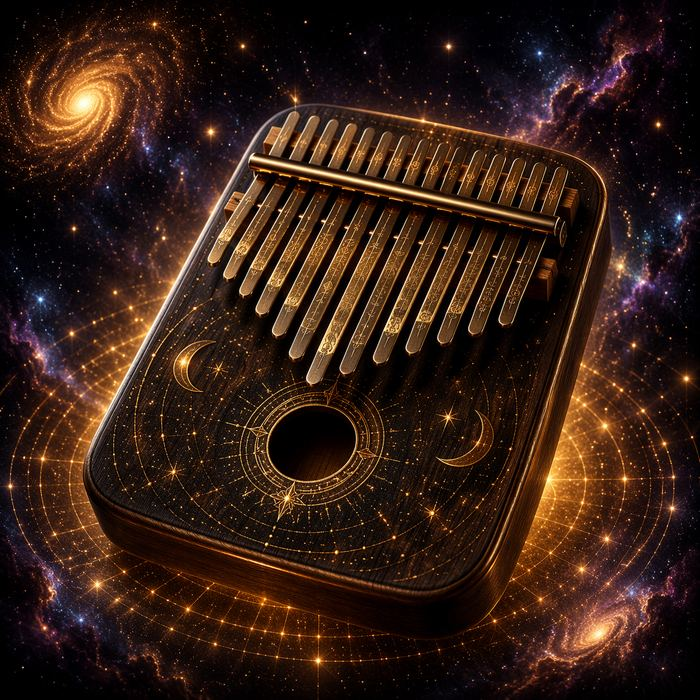
TUNE220 Hz
BPMevery 2 sec (30 bpm)
TIME30 sec
Monochord · tap to pluck, rub for a drone
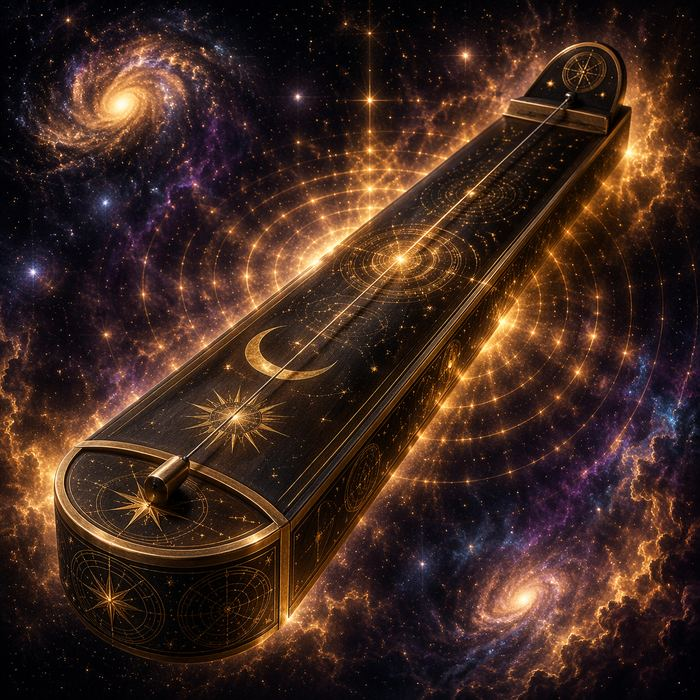
TUNE65 Hz
BPMevery 2 sec (30 bpm)
TIME30 sec
Pan flute · tap a pipe, sweep to ripple
TUNE392 Hz
BPMevery 2 sec (30 bpm)
TIME30 sec
Native flute · press and holdDUBBEL TAP AND HOLD, slide to change note
TUNE294 Hz
BPMevery 2 sec (30 bpm)
TIME30 sec
Shaman drum · tap — center deep, rim sharp
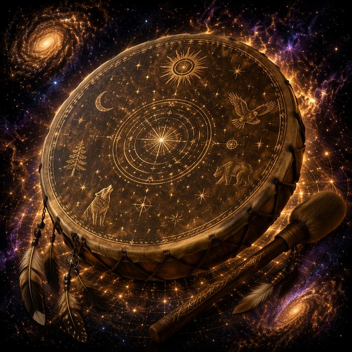
BPMevery 2 sec (30 bpm)
TIME30 sec
Djembe · center bass, middle tone, rim slap
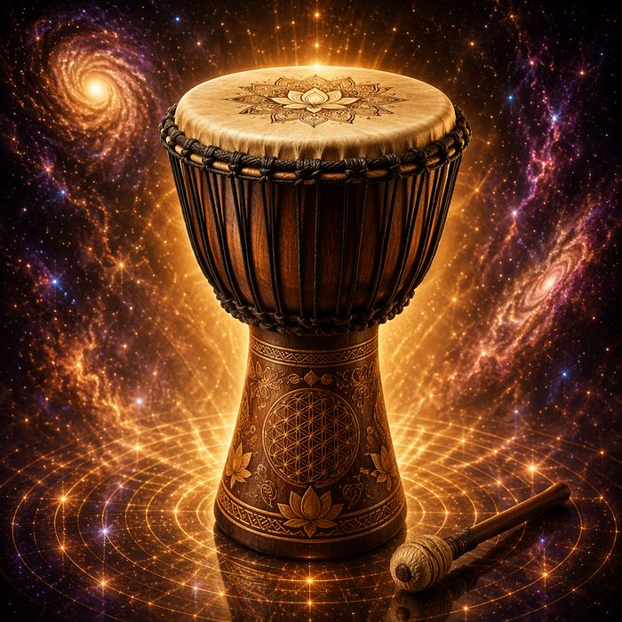
BPMevery 2 sec (30 bpm)
TIME30 sec
Thunder drum · tap for thunder, rub for rumble
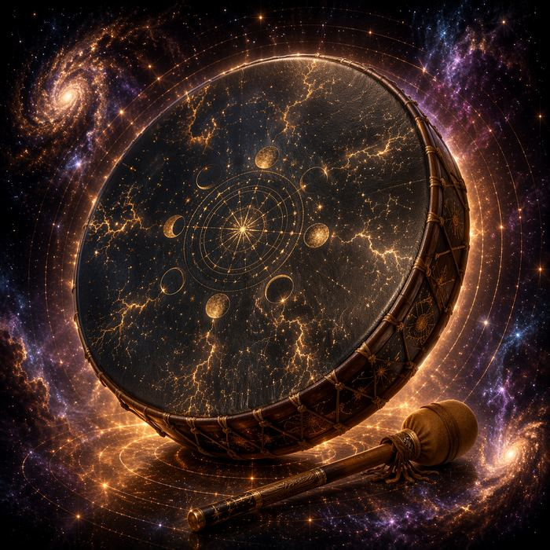
BPMevery 2 sec (30 bpm)
TIME30 sec
Ocean drum · rub to roll the waves, tap for a splash
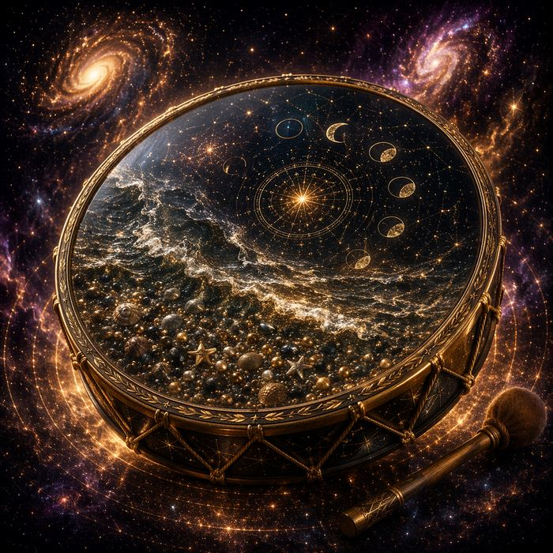
BPMevery 2 sec (30 bpm)
TIME30 sec
Rainstick · tap for a shower, tilt with a drag
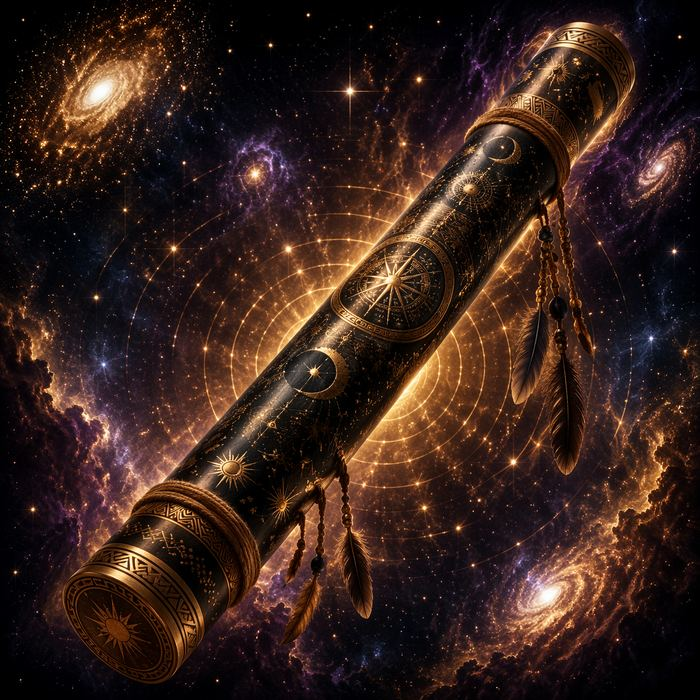
BPMevery 2 sec (30 bpm)
TIME30 sec
Tone & space
Shimmer · beating
A subtle wavering in the pitch — part gentle vibrato, part two near-identical tones interfering with each other. That's the slow "wow-wow" pulse you hear from real singing bowls and gongs.
Space echo
Distinct, repeating echoes — like a tape delay. The sound bounces back at a steady interval and fades, separate from the room reverb below.
Room acoustics & Reverb
Simulates the space you're playing in. Dry removes all ambience; Temple, Cathedral and Cave each add their own natural reflections and decay tail, as if the instrument were really in that room. The Reverb slider sets how much of it you hear.
Volume
Overall loudness of the instruments.
Shimmer/ beating30 %
Space echo25 %
Reverb30 %
Volume35 %
Room acoustics
Recorder
Capture your playing and download it as an audio file.
Human hearing spans, at its best, roughly 20 Hz to 20,000 Hz. Start at a low volume, especially with headphones. And one cosmic truth: in real space nothing can be heard at all – sound needs air. These tones stay safely here with you.